Archivia notifiche
Il Decreto del Ministero dell’Economia e delle
Finanze 26 aprile 2012 definisce le “Regole
tecniche per l’utilizzo, nell’ambito del processo
tributario, della Posta Elettronica Certificata (PEC), per le
comunicazioni di cui all’articolo 16, comma 1-bis, del
decreto legislativo n. 546 del 31 dicembre 1992“.
Nell'ambito del presente decreto, i messaggi di notifica (soprattutto
la
ricevuta di accettazione) forniscono prova dell'avvenuta spedizione di
un messaggio di posta elettronica certificata.
Per
dare la possibilità di effettuare un backup delle notifiche
PEC,
la versione 1.3 di ThunderPEC introduce la funzionalità di
archiviazione delle notifiche di un messaggio PEC con la creazione di
un file ZIP contenente copia del messaggio inviato (se presente) e di
tutte le
notifiche ad esso associato.
Tale funzionalità si estende anche alle ricevute di un deposito PCT ed alle comunicazioni relative ad un flusso FatturaPA
La funzione Archivia è disponibile nella finestra Stato del messaggio (come
indicato nella figura seguente).
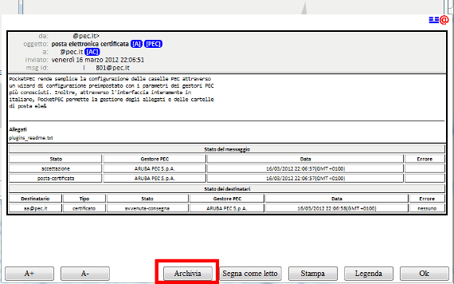
Scelta la cartella di destinazione, ThunderPEC provvede a creare il
file ZIP, salvando il contenuto delle email secondo il formato standard
EML.
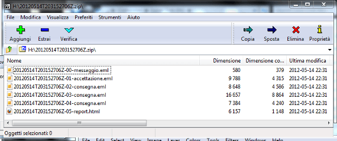
Contenuto del file ZIP
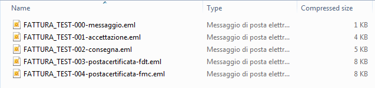
Contenuto file ZIP per FatturaPA
Come evidenziato dalla figura, in aggiunta ai messaggi di posta
elettronica certificata, il file ZIP generato contiene anche il report
in HTML, generato dalla funzionalità Stato del messaggio.
La
versione 1.6.0 di ThunderPEC estende le funzionalità di
archiviazione
delle notifiche alla gestione dei certificati scaduti. Selezionando un
vecchio messaggio di posta certificata, può essere
visualizzata
l'indicazione di certificato non valido.
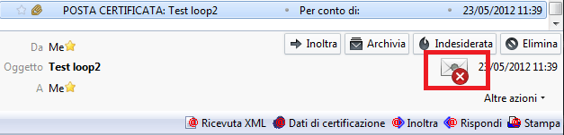
Esaminando i dettagli del certificato associato alla firma digitale
del messaggio PEC, è possibile visualizzare il periodo di
validità del
certificato utilizzato dal gestore PEC: poichè la firma
digitale non
contiene l'indicazione temporale relativa all'operazione di firma e,
conseguentemente, l'operazione di verifica utilizza la data del PC come
riferimento temporale, le operazioni di verifica della firma,
effettuate al di fuori del periodo di validità del
certificato (ad
esempio, oggi 16.09.2014), riporteranno che il certificato non
è valido.
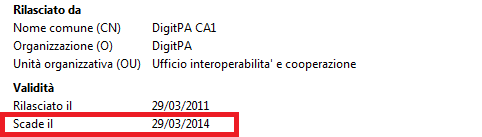
Utilizzando
una nuova funzionlità offerta dalla versione 1.0.1i di
OpenSSL, è
possibile verificare la firma del messaggio di posta elettronica
certificata (S/MIME in generale) indicando una specifica data e non la
data del PC su cui si esegue l'operazione. La data utilizzata
è quella
presente all'interno della ricevuta XML associata ad un messaggio o
notifica PEC, relativa all'emissione della ricevuta da parte del
gestore PEC (La ricevuta XML viene inserita nella busta di trasporto e
firmata digitalmente da parte del gestore PEC).
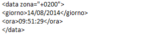
Dalla versione 1.6.0, ThunderPEC aggiunge automaticamente nel file ZIP
generato dall'operazione di archiviazione:
il file baltimore.pem
contenente il certificato digitale di Baltimore
CyberTrust, emittente del certificato, come root certification
authority, verso Digit PA per il sistema PEC
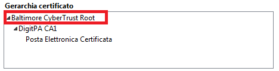
la directory script
contenente i file batch per windows/unix/macos per
la verifica della firma digitale (ad ogni messaggio salvato
è associato
un numero progressivo utilizzato nel corrispondente script)
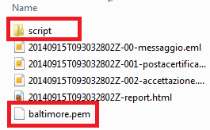
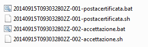
Requisito
per l'utilizzo diretto degli script è la presenza di OpenSSL
versione
1.0.1i o superiore nel PATH.
Per i sistemi unix e macos, per
soddisfare i requisiti di sicurezza delle estensioni per Mozilla
Thunderbird, i file batch (.sh) sono generati come semplici file di
testo. E' necessario eseguire il comando chmod +x
per renderli
eseguibili.
Utilizzando lo specifico script associato al messaggio/notifica PEC
archiviata, è possibile verificare la firma
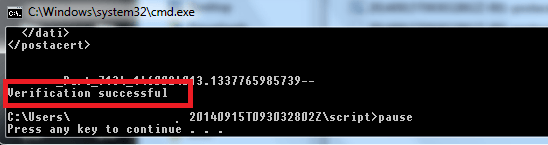
Dalla finestra Stato del Messaggio, è possibile selezionare se inserire i file di script all'interno del file ZIP, utilizzando il flag Aggiungi script per verifica firma digitale
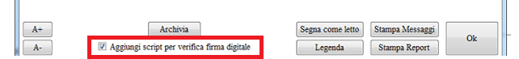
Nella
visualizzazione in formato semplificato della ricevuta XML,
è stato
inserito il campo Timestamp che rappresenta la data della ricevuta
secondo il formato Unix timestamp e utilizzato all'interno del file
batch.
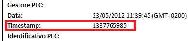
L'operazione di archiviazione è presente anche nel menu
contestuale e all'interno del menu Messaggio di Thunderbird, per cui
è
possibile selezionare uno o più messaggi/notifiche per
archiviarle in
un file ZIP, nella modalità precedentemente descritta.
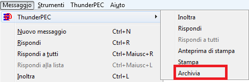